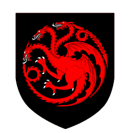

House Targaryen of Dragonstone is an exiled Great House of Westeros and the former royal house of the Seven Kingdoms. House Targaryen conquered and unified the realm before it was deposed during Robert's Rebellion, where House Baratheon replaced it as the new royal house. The two surviving Targaryens, Viserys and Daenerys, fled into exile to the Free Cities of Essos across the Narrow Sea. House Lannister replaced House Baratheon as the royal house in the aftermath of the War of the Five Kings, but they were defeated in the Last War. After Daenerys burnt King's Landing, she was assassinated by her nephew Jon Snow to prevent further destruction. Jon is the last known Targaryen, but his identity as the son of Rhaegar Targaryen is kept a secret, and he was exiled to the Night's Watch for the assassination of Daenerys, effectively ending House Targaryen. However, the bloodline of House Targaryen still exists in various houses, such as House Baratheon, House Velaryon, and House Martell. House Targaryen's sigil is a three-headed red dragon on a black background, and their house words are "Fire and Blood." The head of House Targaryen is referred to as "the dragon."
House Targaryen was one of the forty dragonlord families of the Valyrian Freehold, an empire that rose in Essos and dominated much of the known world. Due to their mastery of dragons, and thus sorcery, they had no real opposition to contend with. Using dragonfire and magic, they built their grand capital city of Valyria, which was unmatched in quality in the east. The Valyrian Freehold's reign would continue until the Doom of Valyria, a cataclysmic event that ultimately fractured the mighty empire and left the Targaryens as the last surviving dragonlords, due to Daenys the Dreamer having foreseen the disaster and convincing her father to leave their capital and take their family to Dragonstone, in spite of their rivals' sneers (another reason could be that Aenar met with some mishap at court and chose exile over execution). Dragonstone would become the seat of their power, due to its importance in their survival, and Aegon Targaryen would end the Century of Blood after Valyria's fall by joining the Free Cities' side against Volantis. After a century of isolation, Aegon, disinterested in the eastern lands of his ancestors, which he saw as old and withered, looked west to the Seven Kingdoms of Westeros, which he sought to conquer and unify into one realm, with the aid of his dragons and his sister-wives Rhaenys and Visenya. In the Targaryen era there were periods of peace and prosperity during the reign of benevolent kings like Jaehaerys the Conciliator, but also periods of terror and distress when evil tyrants like Maegor the Cruel ruled. The civil population of Westeros suffered a lot especially during the bloody conflicts between opposing branches of House Targaryen, like the Dance of the Dragons and the Blackfyre Rebellions. During the increasingly erratic reign of King Aerys II, his son Rhaegar was said to have kidnapped Lyanna Stark of Winterfell for unknown reasons; this led to a massive uprising led by Eddard Stark, Robert Baratheon, and Jon Arryn. At the end of this war, Aerys and Rhaegar were dead and the Targaryen power-base in Westeros destroyed. Aerys's youngest children, Viserys and Daenerys, were taken by Targaryen loyalists into exile in the Free Cities of the East. Unknown to most, however, Rhaegar had his marriage with Elia Martell annulled and remarried Lyanna, with whom he also had a son, Jon Snow. As Lyanna lay dying after giving birth to her son, she pleaded with her brother Eddard to keep her baby safe from Robert, who surely would want her baby dead due to Robert's immense hatred for Rhaegar and promise to wipe out the Targaryen bloodline. She reveals her son's name is 'Aegon Targaryen'. To protect his sister's son from Robert, Eddard takes his infant nephew back with him to Winterfell, names him 'Jon', and claims him as his illegitimate son, raising Jon as his own child alongside his trueborn children. The child would become Jon Snow and grows up with the maternal side of his family. Generations of compound inbreeding have preserved in the Targaryen bloodline the classic Valyrian features of silver-white (platinum blonde) hair, and very fair, pale skin. Allegedly, this also preserved in their bloodline the ability to successfully bond with and ride dragons. They also seem to be somewhat more tolerant of extreme heat and high temperatures than other people, though they are by no means invulnerable to fire or at least, not all of them. Unfortunately, some believe that this practice of inbreeding has also caused the trait of insanity to plague House Targaryen; though some members are known to be perfectly normal psychologically-speaking, other Targaryens throughout history have displayed bizarre, erratic and sometimes violent behavior, succumbing to the so-called 'Targaryen madness'.